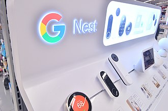
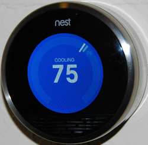
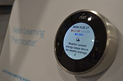
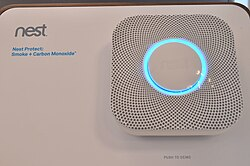
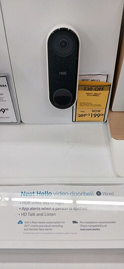
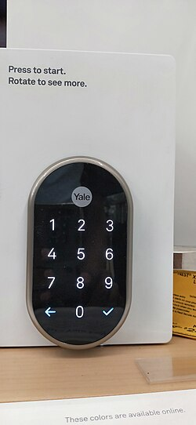
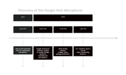
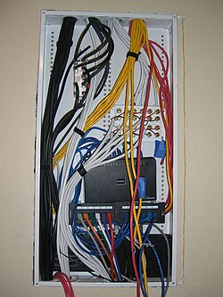

Google Nest
Source: https://en.wikipedia.org/wiki/Google_Nest
Category: products_hardware
Depth: 1
Summary
Google Nest, formerly branded Google Home, is a line of smart home products including smart speakers, smart displays, streaming devices, thermostats, smoke detectors, routers and security systems including smart doorbells, cameras and smart locks.
Images









Full Article
Brand of smart home products by Google
This article is about the smart device manufacturer formerly called Nest Labs. For the line of smart speakers, see Google Nest (smart speakers).
Google Nest, formerly branded Google Home, is a line of smart home products including smart speakers, smart displays, streaming devices, thermostats, smoke detectors, routers and security systems including smart doorbells, cameras and smart locks.
The Nest brand name was originally owned by Nest Labs, co-founded by former Apple engineers Tony Fadell and Matt Rogers in 2010. Its flagship product, which was the company's first offering, is the Nest Learning Thermostat, introduced in 2011. The product is programmable, self-learning, sensor-driven, and Wi-Fi-enabled: features that are often found in other Nest products. It was followed by the Nest Protect smoke and carbon monoxide detectors in October 2013. After its acquisition of Dropcam in 2014, the company introduced its Nest Cam branding of security cameras beginning in June 2015.
The company quickly expanded to more than 130 employees by the end of 2012. Google acquired Nest Labs for US$3.2 billion in January 2014, when the company employed 280. As of late 2015, Nest employs more than 1,100 and added a primary engineering center in Seattle.
After Google reorganized itself under the holding company Alphabet Inc., Nest operated independently of Google from 2015 to 2018. However, in 2018, Nest was merged into Google's home-devices unit led by Rishi Chandra, effectively ceasing to exist as a separate business. In July 2018, it was announced that all Google Home electronics products will henceforth be marketed under the brand Google Nest.
History
Nest Labs before acquisition by Google
Nest Labs was founded in 2010 by former Apple engineers Tony Fadell and Matt Rogers. The idea came when Fadell was building a vacation home and found all of the available thermostats on the market to be inadequate, motivated to bring something better on the market. Early investors in Nest Labs included Shasta Ventures and Kleiner Perkins.
Acquisition by Google of Nest Labs, Dropcam, and Revolv
On January 13, 2014, Google announced plans to acquire Nest Labs for $3.2 billion in cash. Google completed the acquisition the next day, on January 14, 2014. The company would operate independently from Google's other businesses.
In June 2014, it was announced that Nest would buy camera startup Dropcam for $555 million. With the purchase, Dropcam became integrated with other Nest products; if the Protect alarm is triggered, the Dropcam can automatically start recording, and the Thermostat can use Dropcam to sense for motion.
In September 2014, the Nest Thermostat and Nest Protect (a smoke alarm) became available in Belgium, France, Ireland, and the Netherlands. Initially, they were sold in approximately 400 stores across Europe, with another 150 stores to be added by the end of the year[needs update]. In June 2015, the new Nest Cam, replacing the Dropcam, was announced, together with the second generation of the Nest Protect; there were internal reports that sales of the rebranded camera fell.
On October 24, 2014, Nest both acquired the hub service Revolv, and discontinued its product line, gaining the expertise of Revolv's staff.
Nest as a subsidiary of Alphabet Inc.
In August 2015, Google announced that it would restructure its operations under a new parent company, Alphabet Inc., with Nest being separated from Google as a subsidiary of the new holding company.
In January 2016, some Nest thermostats stopped working, a fault attributed to a software update from two weeks earlier. There were no lawsuits, individual or class-action, due to an arbitration clause in the contract.
All Revolv smart hubs, costing several hundred dollars, were deliberately remotely bricked on May 15, 2016; notice was posted on the company's website in February. The story became news on April 4. The "lifetime subscription" to Revolv's online service, which had been sold with the hub, was defined by Nest to be the lifetime of the device, which ended May 15.
Nest's decision to brick the hubs, and its "acerbic" corporate culture, faced substantial criticism from within Google/Alphabet and in press coverage. Many of Nest's staffers came from Dropcam and Revolv, and by November 2015, about 70 of about 1000 staffers had quit, causing management concern. Some countermeasures had been taken in takeover deals, to financially discourage senior people from leaving before set dates. Of the ~100 Dropcam staffers, about half had left by March 2016, when former Dropcam CEO Greg Duffy (who left 8 months after the takeover) wrote a post openly regretting selling his company to Nest. He stated that about 500 people had left (of a 1200-person staff).
On June 6, 2016, Tony Fadell, the Nest CEO, announced in a blog post that he was leaving the company he founded with Matt Rogers and stepping into an "advisory" role. At this point the Nest acquisition was described by some press as a "disaster" for Google. As of mid-June 2016, Nest's problems were considered symptomatic of the limited market for home automation. According to Frank Gillet of Forrester Research, only 6% of American households possessed internet-connected devices such as appliances, home-monitoring systems, speakers, or lighting. He also predicted this percentage would grow to only 15% by 2021. Furthermore, 72% of respondents in a 2016 British survey conducted by Pricewaterhouse Coopers did not foresee adopting smart-home technology over the next two to five years.
Nest as a part of Google hardware division
On February 7, 2018, it was announced by hardware head Rick Osterloh that Nest had been merged into Google's hardware division, directly alongside units such as Google Home and Chromecast. It would retain its separate Palo Alto headquarters, but Nest CEO Marwan Fawaz would now report to Osterloh, and there were plans for tighter integration with Google platforms and software such as Google Assistant in future products. Shortly after the announcement, co-founder and chief product officer Matt Rogers announced his plans to leave the company.
On July 18, 2018, Nest CEO Marwan Fawaz stepped down. Nest was merged with Google's home devices team, led by Rishi Chandra. During the Google I/O keynote on May 7, 2019, it was announced that Google Nest will now serve as the blanket branding for all of Google's home products. The Google Home Hub was retroactively renamed Google Nest Hub, while a new and larger version of the product is now available called the Nest Hub Max with both a larger screen and an amplified speaker, for a greater low-end audio experience. Also, product lines such as Chromecast, Google Home, and Google Wifi will now be marketed under the Google Nest brand. In addition, Nest began to deprecate its own internal platforms, announcing the discontinuation of the existing "Works with Nest" program in favor of Google Assistant going forward, and pushing users to migrate themselves from Nest's account system to Google accounts. Google published Nest-specific privacy information outlining a commitment to transparency, not selling personal information, and giving users control of their data.
In February 2019, a privacy incident affecting the Google Nest Guard system came about. The controversy stemmed from the fact that Nest Guard, a security device that was part of the Nest Secure system, contained a hidden microphone that was not disclosed in any product specifications. It resulted in a public relations failure.
Partnership with ADT
In August 2020 Google announced intent to invest $450 million in ADT Inc. for a 6.6% stake in the company. The companies intend to integrate Nest devices with ADT's security monitoring services and eventually make them the “cornerstone of ADT’s smart home offering”, according to Nest. Upon the announcement, the shares of ADT doubled in value and hit all-time high of $17.21.
Use with Amazon Alexa
As of mid-2022, Google's newer Nest cameras will now work with Amazon Alexa devices such as Amazon Echo Show, Fire TV, and Fire Tablet to view captured security camera footage.
End of support policies
On October 25, 2025, software support was ended for the 1st and 2nd generation Nest Learning Thermostats. In addition, most of the smart functionality including the Home Away features, notifications, and carbon monoxide sensor became inoperative as they were dependent on connection with Google servers. By mid-November, third-party software solutions became available to restore functionality to affected thermostats.
Products
Nest Learning Thermostat
Main article: Nest Learning Thermostat
The Nest Learning Thermostat is an electronic, programmable, and self-learning Wi-Fi-enabled thermostat that optimizes heating and cooling of homes and businesses to conserve energy. It is based on a machine-learning algorithm: for the first weeks users have to regulate the thermostat in order to provide the reference data set. Nest can then learn people's schedules, at which temperature they are used to and when. Using built-in sensors and phones' locations it can shift into energy-saving mode when it realizes nobody is at home.
| Model | Release Date |
|---|---|
| Nest Learning Thermostat 1st Generation | October 25, 2011 |
| Nest Learning Thermostat 2nd Generation | October 2, 2012 |
| Nest Learning Thermostat 3rd Generation | September 1, 2015 |
| Nest Learning Thermostat 4th Generation | August 20, 2024 |
| Nest Thermostat E | August 31, 2017 |
| Nest Thermostat | October 12, 2020 |
The Nest Thermostat is built around an operating system that allows interaction with the thermostat via spinning and clicking of its control wheel (or swiping and tapping on the 2020 Nest Thermostat), which brings up option menus for switching from heating to cooling, access to device settings, energy history, and scheduling. Users can control Nest without a touch screen or other input devices. As the thermostat is connected to the Internet, the company can push updates to fix bugs, improve performance and add additional features. For updates to occur automatically, the thermostat must be connected to Wi‑Fi and the battery must have at least a 3.7 V charge to give enough power to complete the download and installation of the update.
The operating system itself is based on Linux 2.6.37 and many other free software components.
Nest is currently available for sale in the United States, Canada, Mexico, the United Kingdom, Belgium, France, Ireland, the Netherlands, Germany, Austria, Italy, and Spain. It is, however, compatible with many heating and cooling automation systems in other countries.
In September 2017, Nest released the Thermostat E, a lower-priced version of the original Nest Thermostat. It is similar in functionality to the standard model, except with a plastic, ceramic-like bezel ring (instead of metal) and a "frosted" overlay for its display. Unlike the original, the screen only activates when the device is being used; these design changes are intended to make the device appear more natural within a home. The Thermostat E also does not feature as many wiring connectors as the higher-end model; Nest stated that this would make it support at least 85% of homes (as opposed to 95% for the standard model).
In October 2020 Google released the "Nest Thermostat" for the North American market. Pricing was made more accessible and features a mirror-like face, among other significant physical changes. The rotating ring found on other Nest models was replaced with a touch-sensitive strip on the right side of the thermostat body, with swiping and tapping of the touch-sensitive strip being the input method for this model. Learning features have been removed along with support for remote sensors. HVAC compatibility is the same as the Nest Thermostat E, although the bases of the 2020 Nest Thermostat and Nest Thermostat E are not interchangeable.
In August 2024, Google launched the fourth-generation Nest Learning Thermostat. It introduces a borderless design and adds outdoor temperature sensing along with Matter support. The traditional proximity and motion sensors have been replaced by a Soli sensor for more advanced presence sensing. Additionally, the backplate now includes 12 terminals, allowing for connections to ventilation systems and the simultaneous use of a humidifier and dehumidifier.
Nest Protect
In October 2013, Nest announced its second product, the Nest Protect smoke and carbon monoxide detector. The Nest Protect is available in both black and white (the black is exclusively sold through Nest directly) and also comes in battery or AC-powered models. The Nest Protect features a multicolored light ring which is color-coded to indicate different operations, such as yellow to indicate an early warning or red if an alarm is sounding. The ring also has a motion detector which turns it white briefly when someone passes under to provide illumination. The Nest Protect warns of an alarm sounding briefly before it does. It is also able to communicate with the Nest Thermostat to provide the Auto-Away feature information that someone is present in the house, as well as to shut off the furnace in the event of a fire or carbon monoxide. It is available for sale in the United States, Canada, the United Kingdom, Belgium, France, Ireland, and the Netherlands.
On April 3, 2014, sales of the Nest Protect were suspended, due to the potential for the alarm feature to be accidentally disabled.
440,000 existing Nest Protect units were recalled because of this problem on May 21, 2014, and a software update was distributed to disable this functionality.
On June 17, 2015, Nest launched a new version of the Nest Protect (officially termed the "second generation"). The differences from the first generation Nest Protect includes an improved sensor, which uses two wavelengths of light, allowing it to detect both smoldering and flaming fires. The carbon monoxide sensor lasts longer, resulting in the new Nest Protect lasting 10 years, whereas the original Nest Protect lasts seven years. The new Nest Protect can be silenced using a smart device, if not in the US or Canada. When not home, the new Nest Protect will test itself using a built-in microphone. Safety Rewards allows Nest Protect users that have their insurance through American Family and Liberty Mutual to get savings off their bill.
Nest Cam Indoor
In June 2014, Nest acquired Dropcam, maker of the Dropcam security camera. In June 2015, Nest announced the Nest Cam, an upgraded and rebranded security camera based on the Dropcam. Features are a 1080p video resolution, a rotating, magnetic stand, night vision, two-way talk, sound and motion alerts, and optional Nest Aware cloud services for an additional fee. It was renamed Nest Cam Indoor following the announcement of the Nest Cam Outdoor in July 2016. In 2021, Google announced the second-generation Nest Cam Indoor, which is either battery-powered or wired.
Several security flaws with Nest Cam products were reported in March 2017, allowing a burglar to hack the camera's always-on Bluetooth signal and stop recording. Nest released a security update later that month that fixed the vulnerabilities.
Nest Cam Outdoor
Nest Cam Outdoor was announced in July 2016 and is a version of the Nest Cam adapted for outdoor monitoring. The main differences from the Nest Cam Indoor is in its design which is built to withstand outdoor conditions. In 2021, Google announced the second-generation, battery-powered Nest Cam Outdoor.
Nest Cam IQ
Nest Cam IQ was announced in June 2017 and is a more premium model of their Nest Cam Indoor. It features a 4K camera sensor with HDR. It also comes with the ability to recognize and distinguish between different faces when using the Nest Aware service. It also has several minor upgrades, such as better Wi-Fi connectivity, brighter infrared LEDs, a more powerful speaker in addition to added microphones, and a close-up tracking view, which zooms in on action occurring within view of the camera.
A weatherproof outdoor model was announced in September 2017. The indoor version of the Cam IQ also received an update to add Google Assistant functionality to the device in 2018.
In 2021, the Nest Cam IQ Indoor and Outdoor were both discontinued ahead of Google's planned launch of a new line of security cameras.
Nest Secure
Nest Secure was a home security system announced in September 2017. The system consisted of Nest Guard (an alarm, keypad, and motion sensor with embedded microphone), Nest Detect (a door/window and motion sensor), and Nest Tag (a key chain fob). The product was released in November 2017. Nest also had a partnership with Brinks Home Security for a monthly plan so that the Nest Protect system could be professionally monitored.
In February 2019, the Nest Guard received an update to add Google Assistant, allowing it to effectively double as a smart speaker similar to Google Home for general voice commands. This addition has faced criticism, as the presence of a microphone inside the device was not adequately disclosed in product specifications. Google stated that the inclusion of a microphone was accidentally not included in the listed specifications and was originally intended to enable future sensor functionality.
On 19 October 2020, Google confirmed that the production of Nest Secure was officially discontinued. Google did not explain the reason behind the discontinuation of Nest Secure but did confirm the continuation of the service for the existing users. However, on 7 April 2023, Google announced that the service would be shut down on 8 April 2024.
Nest Doorbell
The Nest Doorbell (originally launched as Nest Hello) is a series of smart video doorbells with facial recognition. It was originally slated to launch in February 2018 but was delayed until March in the United States and Canada, and was launched in the UK in May 2018. In 2021, Google announced the battery-powered Nest Doorbell, while the original Nest Hello was rebranded as the Nest Doorbell (wired). In October 2022, the 2nd generation Nest Doorbell (wired) was launched in the US, adding back a number of features that were missing from the Nest Doorbell (battery) even when wired, including 24/7 recording with Nest Aware Plus.
Nest × Yale
Nest × Yale is a smart lock produced in collaboration with Yale, released March 2018. It is connected to Nest Connect or Nest Guard. Powered by four AA batteries, the lock includes a terminal at bottom where a 9V battery can be connected for emergency access.
Nest Wifi
Main article: Google Nest Wifi
Nest Cam with Floodlight
In 2021, Google announced the Nest Cam with Floodlight, a version of the Nest Cam Outdoor equipped with two floodlights, one on each side of the camera.
Works with Nest
Works with Nest was a program that allowed third party devices to communicate with Nest products, such as virtual assistants, along with many third-party home automation platforms. Additionally, many smart device manufacturers have direct integration with the Nest platform, including Whirlpool, GE Appliances, and Myfox.
On May 7, 2019, it was announced that Works with Nest would be discontinued effective August 31, 2019. Users are being directed to migrate to Google accounts and Google Assistant integration instead; doing so will remove the ability to use Works with Nest. Google stated that this change was for security and privacy reasons; as third-party devices may only integrate with the Nest ecosystem via Google Assistant, they will be heavily restricted in the amount of personal data and access to devices they will have access to. Google stated that it would give "a small number of thoroughly vetted partners" access to additional data.
The change faced criticism for potentially resulting in a loss of functionality: vendors such as Lutron and SimpliSafe announced that their products' integration with the Nest platform (which allow them to be tied to the thermostat's home and away modes) would be affected by this change, while Google explicitly named IFTTT as a service that could not be integrated due to the amount of access it would need to operate. The Verge estimated that affected devices would also include Philips Hue, Logitech Harmony, Lutron lights, August Home, and Belkin Wemo switches. Furthermore, The Verge argued that this change created a closed platform, and would lead to fragmentation of the smart home market by potentially blocking integration with products that directly compete with those of Google.
On May 16, 2019, Google clarified its deprecation plans for Works with Nest: existing integrations will not be disabled after August 31, but users will no longer be able to add new ones, and the service will only receive maintenance updates going forward. Google also stated that it was working on replicating Nest platform functions as part of Assistant, such as integraking Nest's Home/Away triggers into the "Routines" system, and maintaining integration between Nest and Amazon Alexa.
Litigation
In February 2012, Honeywell filed a lawsuit claiming that some of its patents had been infringed by Nest.
In April 2012, Nest stated they believe that none of the allegedly infringed patents were actually violated. Honeywell claimed that Nest infringed on patents pertaining to remotely controlling a thermostat, power-stealing thermostats, and thermostats designed around a circular, interactive design, similar to the Honeywell T87. However, Honeywell held patents that were almost identical to those that expired in 2004. Nest has taken the stance that they will see this through to patent court as they suspect Honeywell is trying to harass them, litigiously and financially, out of business.
On May 14, 2013, Allure Energy also filed a lawsuit, alleging infringement of a patent on an "Auto-adaptable energy management apparatus". First Alert sued Nest in 2014 in regards to voice alert functionality and a design trait of the Nest Protect, despite the fact that the world's first talking smoke and carbon monoxide alarm was actually released by Kidde.
In 2016, Nest announced that the devices of Revolv customers would be bricked on May 15, as they were shutting down the necessary cloud software. Karl Bode and Emmanuel Malberg of Vice News compared the move to a remote deletion of purchased Xbox Fitness content by Microsoft. The Federal Trade Commission entered into an investigation of the matter.
In May 2016, an employee filed an unfair labor practice charge with the National Labor Relations Board against Nest and Google. In the charge, the employee alleged that he was terminated for posting information about Tony Fadell's poor leadership to a private Facebook page consisting of current and former employees. The charge also alleged that Nest and Google had engaged in unlawful surveillance and unlawful interrogation of employees in order to prevent them from discussing the work environment at Nest.
Parody after Google acquisition
On May 7, 2014, German activist group Peng Collective released a parody website named Google Nest, satirizing Google's privacy policies and practices with fake products imitating Google art style, supposedly created as a result of "an intensive period of studying user behavior" in response to the "public debate around privacy and government surveillance". The site described four purported new services lampooning Google's data gathering tendencies made possible with Nest's technology: Google Trust, Google Hug, Google Bee, and Google Bye, respectively a "data insurance" paid with personal data, a location service encouraging in-person emotional interactions, a "personal drone", and a memorial website created from automatically collected information.
The next day, Google trademark lawyers issued a cease-and-desist letter to Peng, asking them to change the site and to transfer the domain name to Google. The site replaced its content with a note explaining the situation, and the Electronic Frontier Foundation responded on behalf of Peng with a public letter saying that noncommercial political commentary is not prohibited under trademark law, and that the site would not likely be confused after the ample press coverage received.
Controversies
Hidden Nest microphone incident
Google Nest Guard contained a microphone that was not disclosed in any of the product specifications. The microphone was discovered by the public in February 2019, after Google announced a new feature that would use that microphone for voice commands. Users and reviewers were shocked, as the product's tech specs had never listed a microphone. Google claimed that it was an error when writing the product specifications. US Senators wrote an open letter to Google's CEO demanding answers and an in-person briefing. They framed the incident as a major breach of consumer trust and raised specific security concerns.
History
The Nest Secure system, featuring the Nest Guard as its hub, launched in September 2017. The system included the Nest Guard hub with a keypad and motion sensor, Nest Detect door/window sensors, and Nest Tag key fobs for arming and disarming the alarm.
One year and a half later, in February, 2019, Google announced a software update that enabled Google Assistant on the device, thus revealing an undisclosed microphone in the Nest Guard that lead to the hidden microphone controversy.
After the public backlash, Google acknowledged this as an "error" and claimed the microphone was never activated without user permission. Google responded that "the on-device microphone was never intended to be a secret and should have been listed in the tech specs". However, the omission raised serious privacy concerns, as critics argued that if a microphone was not disclosed in the specs, the same could also happen for other components or features.
The public's reaction
The announcement caused immediate concern and anger. Users and tech blogs such as Daring Fireball, highlighted the issue, and it was widely reported across major news outlets starting around February 20, 2019. Silkie Carlo, director of the privacy-focused campaign group Big Brother Watch, reported "Many of our worries about smart home devices appear to be proving true... Google should be held to account for wrongly advertising this product".
After the revelations that Google did not let consumers know of the microphone in its Nest security devices, the Electronic Privacy Information Center, a major advocacy group, sent a letter to the Federal Trade Commission alerting that the situation constituted a consumer risk and it demanded it to take enforcement action against Google. EPIC argued that the FTC should have done a more rigorous review before allowing Google to acquire Nest and demanded that it should force it to divest its Nest business.
US Senators open letter
At the end of February 2019, US Senators demanded more details about revelations that a hidden microphone had been built into its Nest devices without listing it in the specifications. In their formal letter to Sundar Pichai, they referred to the consumers' concern about the "ability of large technology companies to collect and use personal data about them without their knowledge" and they demanded that these corporations be transparent with customers and provide full disclosure of all technical specifications that they sell. They stated Google's failure "raises serious questions about its commitment to consumer transparency".
In addition, they demanded answers regarding:
- Timeline and awareness: when and how Google realized the microphone was not listed in the tech specs.
- Component history: whether a microphone was always a part of the Nest Secure device
- Consumer notification: what steps Google took to inform customers who had already purchased the device.
- Internal process: a description of Google's process for developing technical specs, where the error occurred, and what fixes were in place.
- Security and unauthorized use: if Google was aware of any third party (like hackers) using the microphone without authorization. The letter highlighted that even if Google never activated the microphone, the hardware's existence created a security risk that hackers or outside entities could exploit to illicitly record information.
Other
Per the terms of service, Google will provide law enforcement with Nest data "If we reasonably believe that we can prevent someone from dying or from suffering serious physical harm. For example, in the case of bomb threats, school shootings, kidnappings, suicide prevention, and missing person cases." In certain situations, this may be done without a warrant.
See also


References
Further reading
- Huitt, Robert; Eubanks, Gordon; Rolander, Thomas "Tom" Alan; Laws, David; Michel, Howard E.; Halla, Brian; Wharton, John Harrison; Berg, Brian; Su, Weilian; Kildall, Scott; Kampe, Bill (April 25, 2014). Laws, David (ed.). "Legacy of Gary Kildall: The CP/M IEEE Milestone Dedication" (PDF) (video transcription). Pacific Grove, California, USA: Computer History Museum. CHM Reference number: X7170.2014. Retrieved January 19, 2020. "[...] Rolander: [...] Gary then started a company, Prometheus Light and Sound, and he was into connected devices within the home. Which is of course what Google and Nest is about at this point, I think the reason for their acquisition. So he was consistently 10, maybe 20 years ahead, of, in many cases, the commercial viability of a lot of those technologies." Milestones:The CP/M Microcomputer Operating System, 1974 - Engineering and Technology History Wiki Legacy of Gary Kildall: The CP/M IEEE Milestone Dedication (33 pages)
External links

Wikimedia Commons has media related to Google Nest.
| - v - t - e Google | |
|---|---|
| a subsidiary of Alphabet | |
| Company | |
| Development | |
| Software | |
| Hardware | |
| - v - t - e Litigation | |
| Related | |
| Italics denote discontinued products. - Category - Outline |